🎯 The Strategy: Generic titles like "Kajaria Ceramics Case Study" get rejected within 5 seconds during the initial scan. Hiring managers look for business awareness and specificity immediately.
✍️ Formula to Follow: [Specific Product/Brand] + [Core User Friction/Business Problem Solved] + [Design Intent & Measurable Impact]
How I transformed Kajaria Ceramics from a slow 12-second bounce loop into an intent-driven visual discovery platform with WebAR spatial preview and seamless verified dealer routing.
🎯 The Strategy: Create an immediate narrative hook by placing the recruiter in the user's shoes at a moment of intense real-world frustration. This opens a psychological Curiosity Gap that compels them to keep reading.
✍️ What to Write: Describe a concrete time, place, and persona facing a high-stakes decision where the existing tool failed miserably. Conclude with the driving question that defined your project.
It’s 7:45 PM on a Tuesday evening in South Delhi. Priya, an interior architect, is sitting in a living room consultation with an impatient homeowner couple. They need to approve 4 vitrified floor tiles before civil work begins tomorrow morning.
She opens India’s largest tile manufacturer website on her iPad. She searches for 'matte finish beige tiles 60x120'. The page freezes, drops her into a cryptic 6-column mega-menu of factory series codes, and offers a pixelated PDF catalog download. After 3 minutes of spinning loaders, the client sighs: 'Let’s just look at another brand tomorrow.'
🎯 The Strategy: Hiring managers evaluate portfolios in two phases: Gate 1 (20–45s Scan) and Gate 2 (Deep Scrutiny). Never bury your final design after 10 scrolls of research affinity maps. Tease the polished high-fidelity solution upfront so recruiters immediately recognize your craft.
✍️ What to Highlight: Present your hero desktop/mobile mockup with 3 annotated callouts pointing out the core innovations.
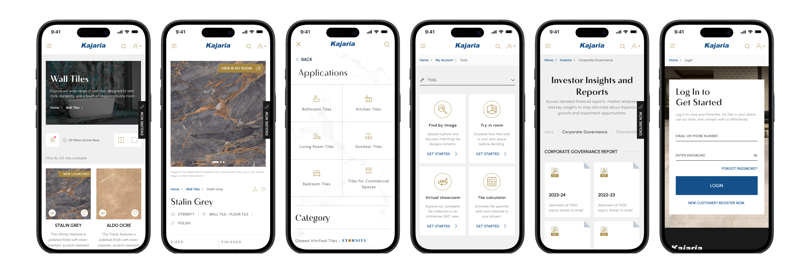
🎯 The Strategy: A great problem statement does not use academic UX jargon. It connects two concrete pillars: (1) The Business Metric Broken and (2) The Root Cause in User Behavior.
✍️ Checklist: Clarify team composition, exact constraints (APIs, legacy systems, timeline), and establish baseline metrics you aimed to move.
Despite commanding 40%+ market share offline, Kajaria’s digital presence operated as an unsearchable digital brochure that alienated both retail homeowners and trade architects.
🎯 The Strategy: Avoid dumping a grid of disconnected mockups. Instead, guide the reader through an intentional sequence using a realistic persona lens (e.g., Walk with Priya). Show how each UI component solves a specific emotional hurdle along the conversion journey.
✍️ What to Write: For each step, document: (1) User Mindset / Emotion, (2) The Screen Solution, and (3) Concrete UX Decisions made for that view.
Experience the redesigned ecosystem through the eyes of an architect guiding her clients through shortlisting, spatial preview, and physical showroom inspection.
• Visual Intent Selector: Replaced technical dropdowns with visual pills (Living Room, Kitchen, Outdoor, Commercial).
• Predictive Visual Search: Users can upload room inspiration images or search natural keywords like 'warm minimalist' to get instant SKU matches.
• Real-Time Count Feedback: Live indicator shows exactly how many matching tiles exist before committing to a filter.
• Micro-Surface Light Simulation: Allows toggling between Warm, Cool, and Daylight light sources to preview tile gloss and reflection.
• Automated Wastage Calculator: Enter room dimensions (L × W) to automatically output required box counts with a recommended 10% cutting buffer.
• Downloadable Spec Sheets: 1-click PDF export containing exact slip ratings (R-value), water absorption, and technical specs for contractors.
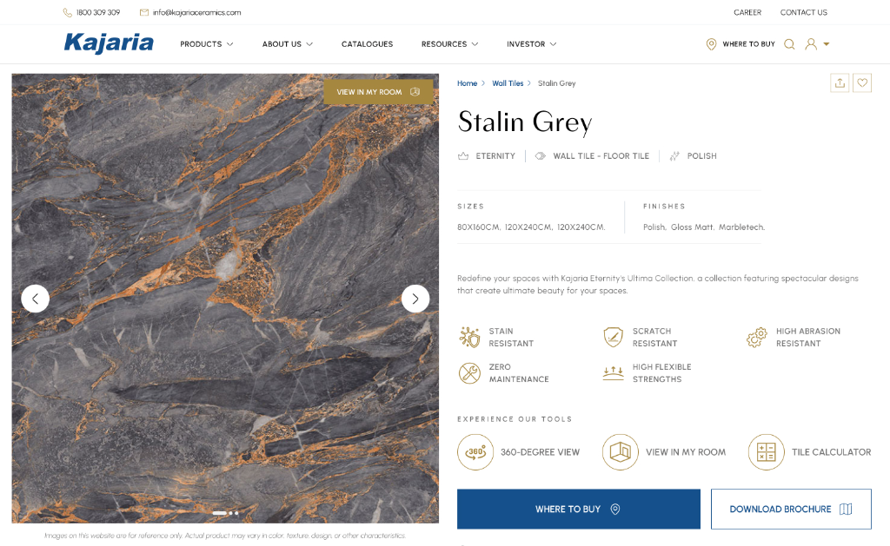
• WebAR Instant Activation: Runs directly inside mobile Safari/Chrome via WebXR—no App Store download required.
• Split-Screen Surface Comparison: Users can drag an interactive divider in real time to compare two shortlists on their own living room floor.
• Realistic Scale & Grout Presets: Automatically aligns to the room’s perspective grid with realistic 2mm or 3mm grout spacing.
• Verified Nearby Dealer Finder: Detects geolocation to surface verified dealers within 5km that stock the specific shortlisted SKUs.
• WhatsApp Sample Pass: Generates a branded digital pass sent straight to WhatsApp containing SKU barcodes, driving directions, and dealer phone.
• Seamless Retail Loop: Bridges digital browsing directly into showroom dealer foot traffic, eliminating customer churn.
🎯 The Philosophy: In the AI era, anyone can generate polished UI screens with prompts. Recruiters and Design Directors hire for high-stakes decision making, trade-off evaluations, and strategic trade-offs. That is what Anudeep's Decision Stories framework proves.
✍️ The 6-Part Anatomy for Every Decision Story:
The Conflict: Factory heads and corporate sales stakeholders insisted on listing all 48 manufacturing sub-brands in the top navigation. This resulted in an unreadable 6-column mega-menu on desktop and an endless 14-screen accordion on mobile. Usability testing revealed a 68% miss-click rate where users abandoned before seeing a single tile.
Users were expected to understand internal manufacturing jargon like 'Polished Glazed Vitrified Tiles Series 4' vs 'Ceramic Wall Glaze Class B'. Unless a user had a civil engineering degree, they could not browse products.
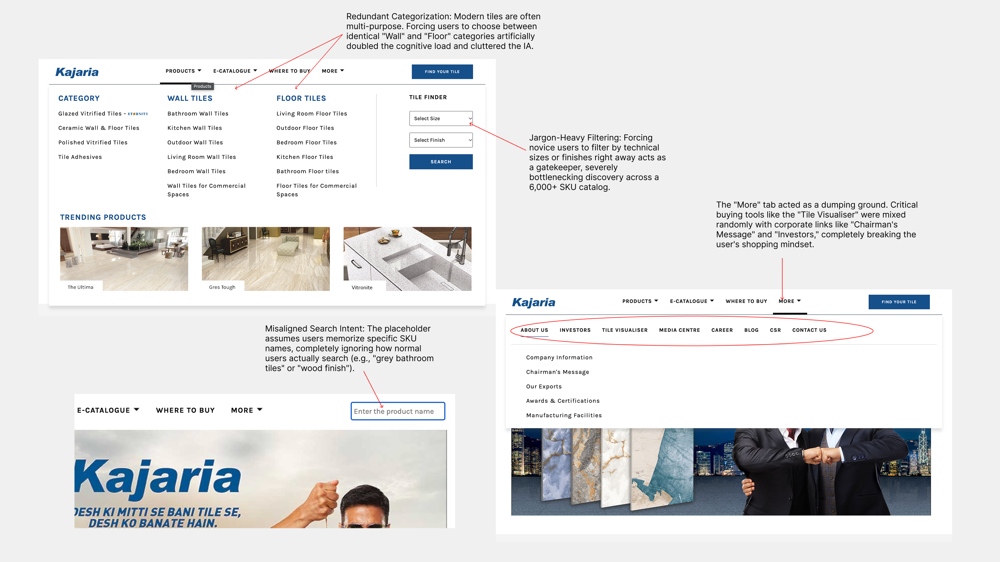
We had to choose between three architectural directions to balance catalog depth with cognitive ease:
Designed an animated overlay drawer with large touch-friendly category cards. Integrated real-time SKU count badges so users immediately see: 'Bathroom + Matte = 142 Tiles Available'. Added an instant clear-all toggle to prevent dead-end zero-result states.
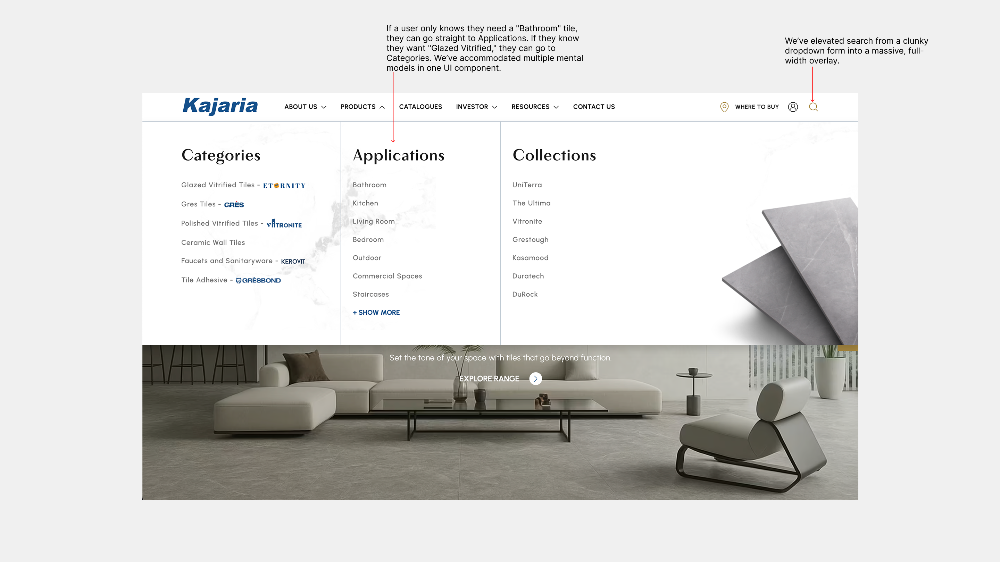
Time-to-First-Tile: Dropped dramatically from 42 seconds down to 8.5 seconds. Mobile menu exit rate decreased by 44%, and catalog product exploration depth increased by 65%.
The Conflict: Corporate leadership originally wanted to build a native iOS and Android AR Mobile Application, dedicating substantial engineering budget. However, web analytics proved that 82% of all inbound tile buyers arrived via mobile search on Google while standing in physical showrooms or during brief lunch breaks.
Requiring an impatient homeowner to download a 120MB native app over showroom mobile data just to visualize a single bathroom tile would introduce a 90%+ funnel abandonment cliff.
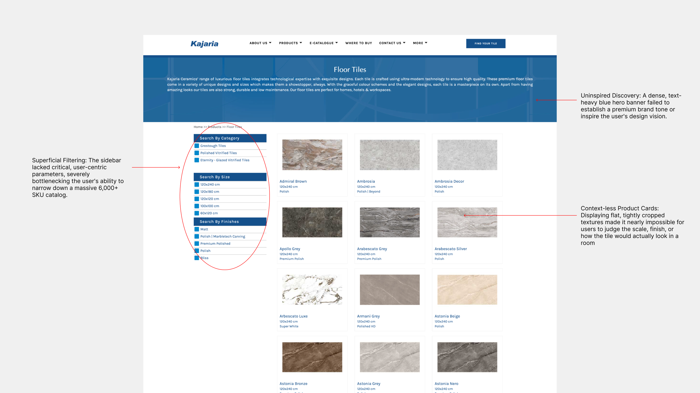
Engineered a 2-step permission modal that clearly explained camera privacy. Designed an interactive split-screen slider allowing users to swipe across their live camera feed to compare two different tile finishes on their actual living room floor with realistic light reflection.
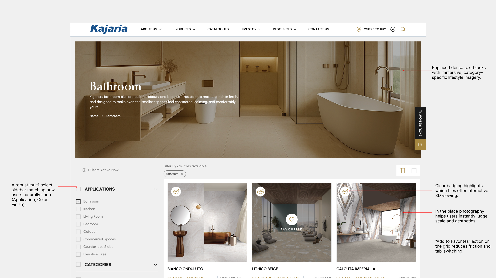
Massive Feature Adoption: Over 4.2x higher utilization compared to projected native app downloads. More than 38% of WebAR users proceeded directly to generate a dealer sample shortlist.
The Conflict: Kajaria operates entirely on a B2B franchise showroom model. Corporate does not ship tiles directly to consumers. The legacy website's 'Where to Buy' page was merely an unformatted Google Map with 1,200 pins and dead telephone numbers. Showroom dealers complained that customers walked in asking for tiles that had been discontinued years ago.
There was no digital record connecting an online product view to a physical showroom visit. High-intent customers had to manually copy paste SKU codes into their phone notes.
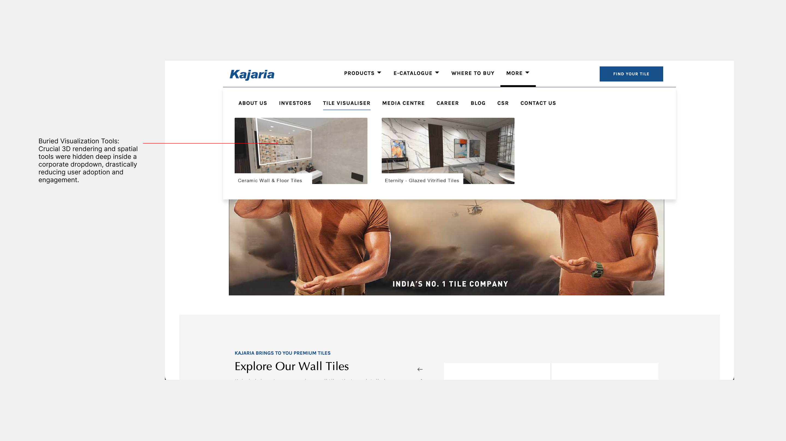
Built a 1-click 'Send Sample Pass to WhatsApp' button on every shortlisted tile. The generated pass includes high-res SKU thumbnails, dimensions, tile box calculator estimates, dealer address, and direct Google Maps navigation.
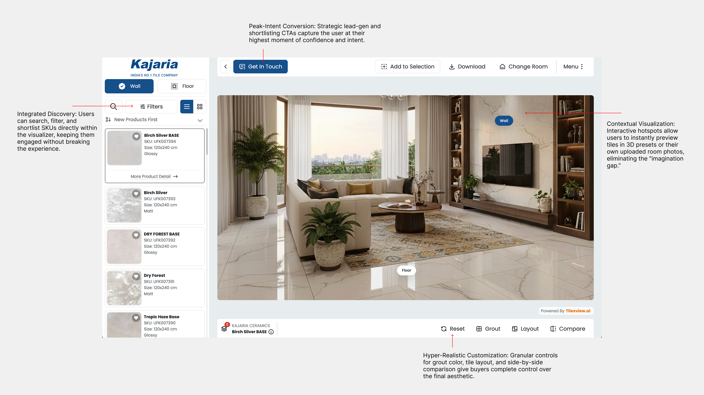
+310% Showroom Lead Attributions: Dealers reported over 1,400+ monthly verified customers showing up with their digital WhatsApp passes. Franchise dealer satisfaction ratings rose from 2.4/5 to 4.7/5.
🎯 The Strategy: Junior designers pretend their very first idea was flawless. Senior designers show their evolutionary scars: the discarded concepts, the usability test failures, and the technical barriers that forced them to rethink.
✍️ What to Show: Pick one critical component (e.g., The Tile Estimator) and walk through 3 distinct iterations: (1) The Initial Naive Idea, (2) The Usability/Technical Failure, and (3) The Refined Production Solution.
How testing with real contractors and homeowners forced us to throw away two early concepts to find the balance between precision and cognitive simplicity.
Asked users for grout joint thickness (mm), tile caliber codes, and room perimeter. Looked scientifically rigorous in wireframes.
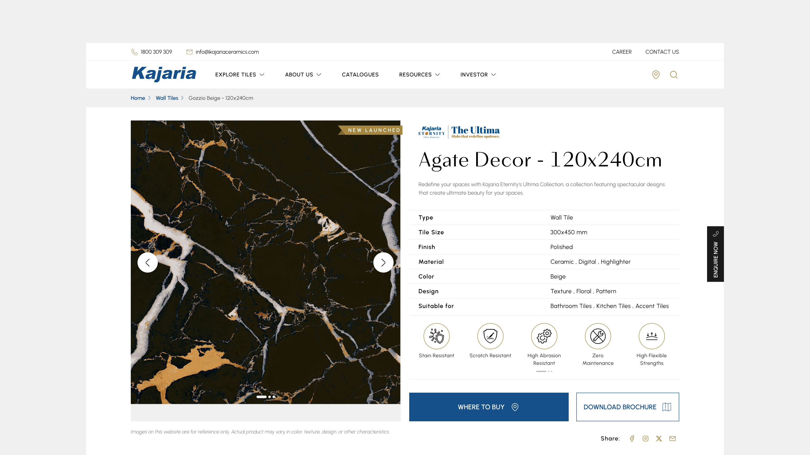
Swung to the opposite extreme: a single slider with generic presets ("Small Bathroom", "Medium Living Room").
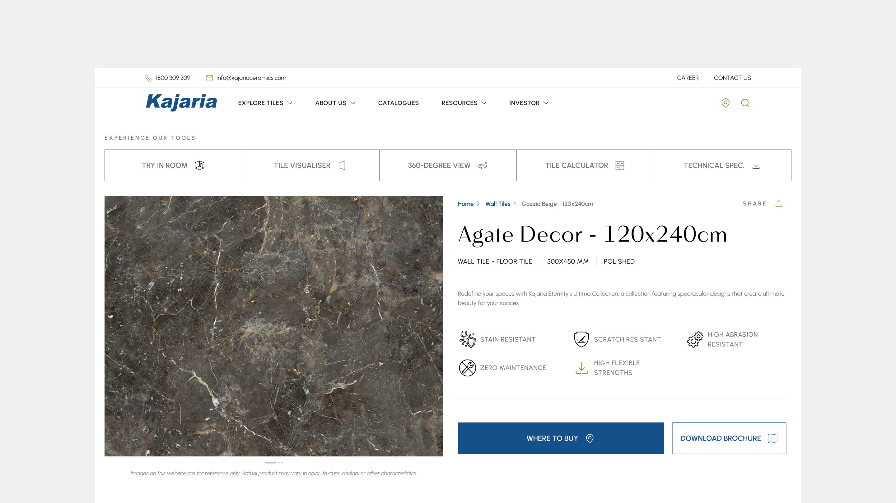
Users simply enter Room Length × Width in feet or meters. The calculator converts this to exact boxes with a toggleable 10% wastage buffer.
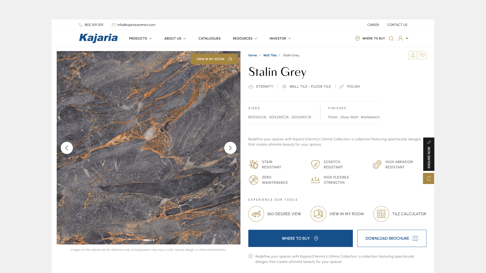
🎯 The Strategy: Senior hiring managers look for systems maturity. Show that your UI isn't just pretty screens, but a codified token architecture ready for frontend development.
✍️ What to Highlight: Typography pairing rationale, semantic color tokens with WCAG contrast ratings, and Figma atomic components with variant properties.
Crafted a scalable, dark-obsidian component system to ensure visual consistency across 4,000+ SKUs and flawless handoff to frontend engineers.
Pairing Instrument Serif for high-impact editorial storytelling with Inter for precise specifications and tabular numeric data.
Engineered an obsidian canvas (#0d0d12) that lets tile product photography radiate without visual competition, meeting WCAG AAA contrast guidelines.
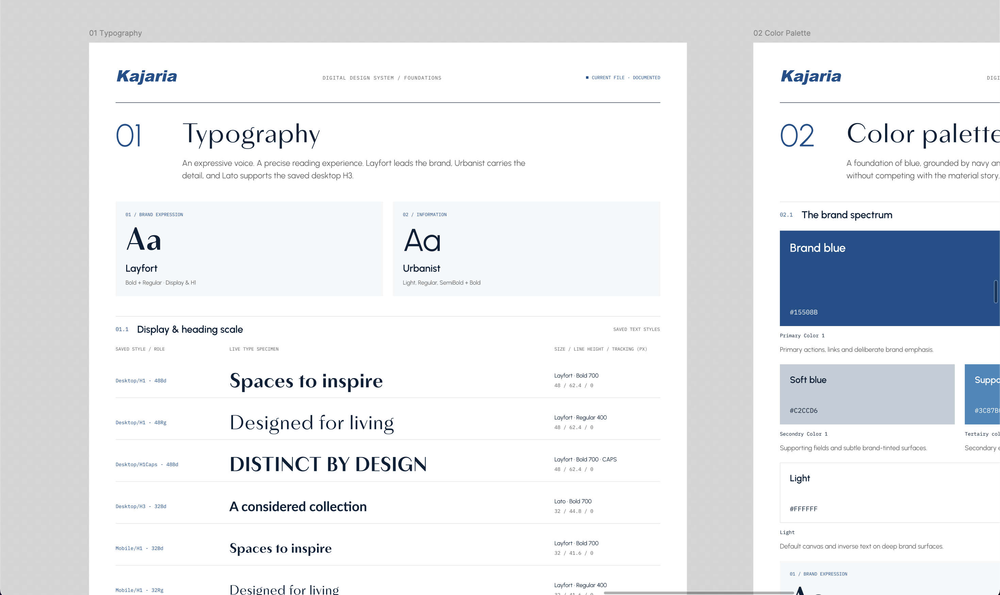
🎯 The Strategy: Never write cliché generic learnings like "I learned that user research is important". Design leaders want to hear the honest, vulnerable lessons: what broke unexpectedly, what you would do differently, and what concrete items belong on the V2 roadmap.
Real design work requires balancing technical constraints with user empathy. Here is what this project taught me and what we would build tomorrow.
Optimizing for 4G Showroom Conditions: Even the most beautiful WebGL tile visualizer is useless if the initial 3D bundle exceeds 3MB. Compressing glTF textures and designing graceful 2D offline fallbacks was 50% of the true UX work.
Involving Showroom Dealers on Day 1: We initially conducted research primarily with retail homeowners and architects. Involving franchise dealers earlier would have revealed crucial insights regarding tile shade batch variations weeks ahead of time.
1. AI Camera Room Scanner: Point your camera at an existing floor to detect tile shade and output complementary wall tiles.
2. B2B Contractor Multi-Cart: Enable architects to manage separate shortlists for multiple ongoing client sites.
I’d love to walk you through the interactive prototype, edge cases, design tokens, and engineering handoff specs in a 15-minute call.
Schedule a 15-Min Walkthrough